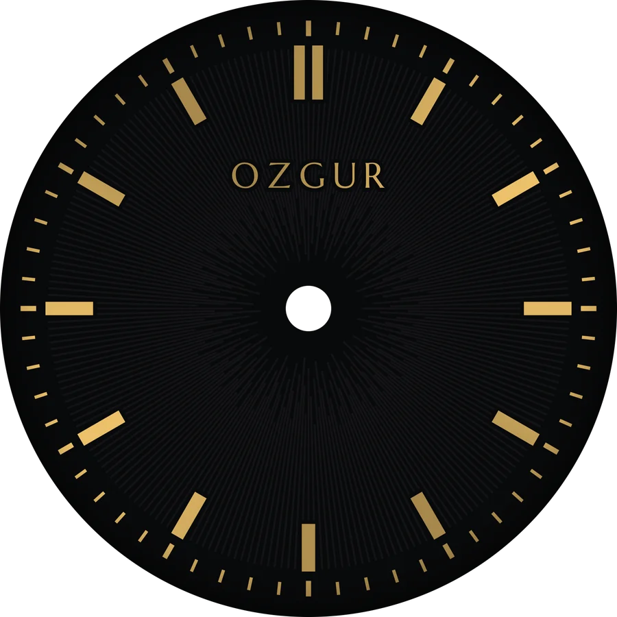
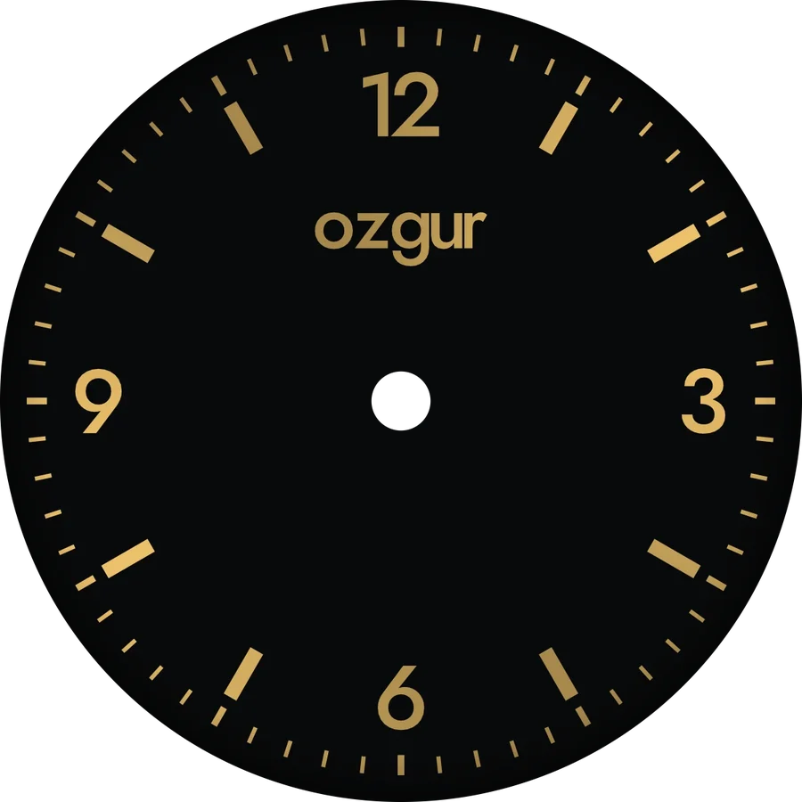
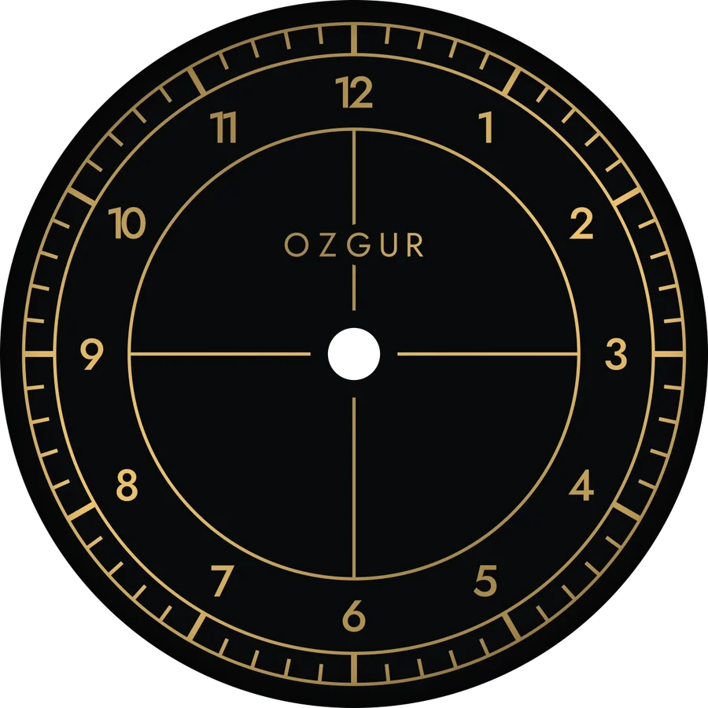

Kadranını kendimiz tasarladığımız otomatik kol saati. Mekanizma, kasa ve ibreler hazır alınıyor; kadran Türkiye'de lazerle (ya da baskı devre kartı olarak) üretiliyor.

NH38A otomatik mekanizma (Seiko NH35 ailesinin tarihsiz modeli), hazır 36 mm safir camlı çelik kasa, hazır ibreler ve deri kordon alıyoruz. Saati senin yapan parça kadran: yukarıdaki üç stilden birini seçiyorsun, üretim dosyasını ben hazırlıyorum.
Kadranın en ucuz yerli üretim yolu, üstü siyah kaplı altın renkli alüminyum levhaya fiber lazerle işletmek. Daha parlak, ışınsal dokulu ve mavi/yeşil seçenekli bir sonuç istersen aynı tasarım baskı devre kartı (PCB) olarak da yaptırılabilir. İki yolun dosyası da hazır.
Bütçe konusunda açık olayım: 5.000 TL ancak her kalem en ucuz uçtan gelirse tutuyor. Gerçekçi plan ~6.000 TL. Özel 12 köşeli kasa ise ayrı bir ikinci aşama.
İki yedek ibre seti ve günlük sapma ayarı dahil. Tarih penceresini hizalama derdi yok.
5.000'in altına ancak ibre ve kordon tek Temu sepetinden gelirse, lazer ve saatçi de en ucuz fiyattan çıkarsa iner.
Yerli CNC atölye ücretlerinden tahmin. Gerçek fiyat, STEP dosyalarıyla teklif alınınca belli olur.
7 Ocak 2026 tarihli Cumhurbaşkanı Kararı (Resmî Gazete 33130) ile yurt dışı kargolarda 30 € muafiyeti kalktı; Şubat 2026'dan beri her paket tam beyanla gümrükleniyor. PTT hattında paket başına 3.984 TL müşavirlik ve 1.650 TL damga vergisi, yani ≈ 5.634 TL sabit masraf var. AliExpress ya da JLCPCB'den 20 dolarlık bir sipariş bile bütçeyi tek başına aşıyor. Bu yüzden her şey Türkiye içinden ya da vergiyi sepette tahsil eden Türk ithalatçılardan (Temu Türkiye, Robotistan, Hepsiburada “Yurt Dışından”) alınacak.
Fiyatlar araştırmada bulunan ilanlardan (Ekim 2026). TAHMİN yazanlar ilan fiyatı değil, benzer işlerden çıkarılmış aralık. Hepsiburada fiyatları tarihsiz anlık görüntü; almadan önce sepette son fiyata bak.
| Kalem | Seçim ve kanal | Önerilen | En ucuz |
|---|---|---|---|
| Mekanizma | Önerilen: NH38A + kurma mili, Gui Xulian · En ucuz: NH35A, Talentİkisi de Hepsiburada “Yurt Dışından” | 1.857 | 1.581 |
| Kasa | Geervo 36 mm, safir cam, 316L çelikHepsiburada “Yurt Dışından”; ara halka ve kurma kolu dahil mi sor | 1.345 | 1.345 |
| Kadran levhası | Edico siyah–altın lazer alüminyumu, 30×60 cmHalsa, Başakşehir · onlarca deneme yeter | 310 | 310 |
| Kadran lazer işçiliği | Ostim Etiket ya da yerel fiber lazer atölyesiAdet şartı yok, 2–7 iş günü | 500–1.000 TAHMİN | 500–1.000 TAHMİN |
| İbreler | Önerilen: Humble 3 takım, gümüş (2 yedek), Hepsiburada · En ucuz: Temu sepeti, ibre + kordonTemu'da asgari sepet 580 TL | 581 | 580–826 |
| Kordon | 20 mm hakiki deri, Amazon.com.trEn ucuz yolda ibreyle aynı sepette | 398 | — |
| Kadran sabitleme | Dial dot ya da ince çift taraflı kadran bandı | 50–150 TAHMİN | 50–150 TAHMİN |
| Montaj | Saatçi: kadran, ibreler, kurma mili kesimi, kapanış (önerilende ayar dahil) | 500–1.500 TAHMİN | 500–1.000 TAHMİN |
| Toplam | 5.541–7.141 | 4.867–6.212 |
Kur ve ilan fiyatları oynuyor; üstüne %10 pay koy. Tek saat için saatçi, alet seti almaktan ucuz (Türkiye'de ayrı ayrı alınan aletler 2.000–3.500 TL tutuyor).
Yukarıdaki sahnede dene. Logo yazısı (OZGUR, ozgur, özgür…) ve ölçüler kodda tek satır; yeni dosyaları ben üretirim.
Hepsiburada “Yurt Dışından” sepetinde gümrük satırı görünüyor mu, gümrüğü Hepsiburada mı çekiyor? Yazılı teyit yoksa o kanaldan alma. Temu'da ürünün Türkiye adresiyle “satın alınabilir” olduğunu gör.
İlanda 28,5 mm kadran yazmalı. Ara halka ve kurma kolu kutuda mı sor. Gelince camın altından görünen kadran çapını ölç (en az 27,1 mm olmalı); farklıysa kadranı o ölçüye göre yeniden üretirim.
NH38A (tarihsiz) önerilir. Satıcıdan rotor ve köprü üzerindeki “TMI/JAPAN” yazısının fotoğrafını iste; bu fiyatta orijinal garanti edilemez.
Halsa'dan levhayı al, atölyeye DXF dosyasıyla gönder: ALTIN katmanı “kaplamayı yak”, KESIM katmanı “kes”. Önce artık bir parçada deneme izi, sonra 2–3 kopya iste.
Altın ibre bulursan siyah–altın kadrana en iyi o yakışır; yoksa gümüş set.
2–3 saatçiden yazılı teklif al. Kadran ayaksız olduğu için bantla/dial dot ile yapıştırılacak, ibreler saat 12'de üst üste hizalanacak, kurma mili kasaya göre kesilecek.
Fabrika toleransı günde −20/+40 saniye. Çok saparsa saatçi birkaç dakikada ayarlar.
Önce STEP/STL dosyasından ucuz bir reçine prova baskısı al, bileğinde dene. Beğenirsen dosyaları 3 yerli CNC atölyesine gönder. Mekanizma, kadran, ibre ve kordon olduğu gibi yeni kasaya taşınır.
Üçü de sade ve okunaklı, yazı olarak yalnız logo var. Ölçüler Seiko'nun resmî NH35/NH38 föyünden: Ø28,50 mm, merkez deliği Ø2,10 mm, en ince çizgi 0,15 mm.


Kayseri'deki Döner Kümbet'in on iki yüzlü gövdesinden esinli: 12 düz yüzlü gövde, üstte 12 yüzeyli eğimli bezel, uca doğru incelen kulplar ve 12 köşeli kurma kolu. Sahnede “12 köşe (özel)” ile görebilirsin.
Çizim Seiko föyündeki ölçülere oturtuldu: standart ara halka yuvası, ibreler için cam altı boşluğu, kurma mili yüksekliği ve rotor boşluğu. Arka kapak 4 adet M1,6 vidayla tutuyor ve safir pencereden mekanizma görünüyor.
Metal 3D baskı (±0,3 mm) ara halka yuvasını tutturamıyor, bu yüzden CNC gerekiyor. Yurt dışından CNC, gümrükle birlikte 13.000 TL'den başlıyor; yerli atölye daha mantıklı.
tasarim/kadran/kadran.py kadranı üreten kod: python3 kadran.py stil=klasik tarih_penceresi=falsetasarim/kadran/cikti/ozgur_kadran_<stil>_lazer.dxf lazer atölyesi için (KESIM + ALTIN katmanları)tasarim/kadran/cikti/ozgur_kadran_<stil>_gerber.zip PCB için (0,4 mm, ENIG, NPTH merkez deliği; sipariş numarası arka yüze basılır). Tarihli ve ayak delikli varyantlar da var.tasarim/kasa/kasa.py ve tasarim/kasa/cikti/*.step 12 köşeli kasa, arka kapak ve ara halkareports/5000 TL altı özel saat yapımı.md kaynaklı ayrıntılı araştırma raporu